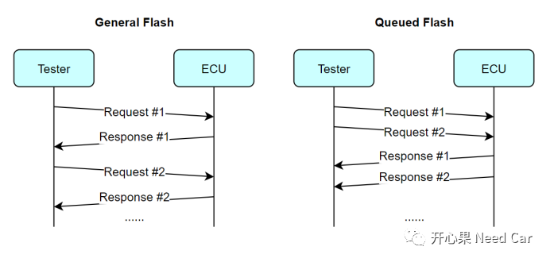
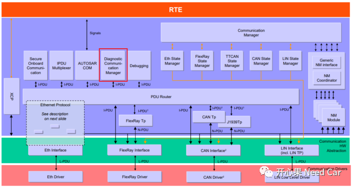
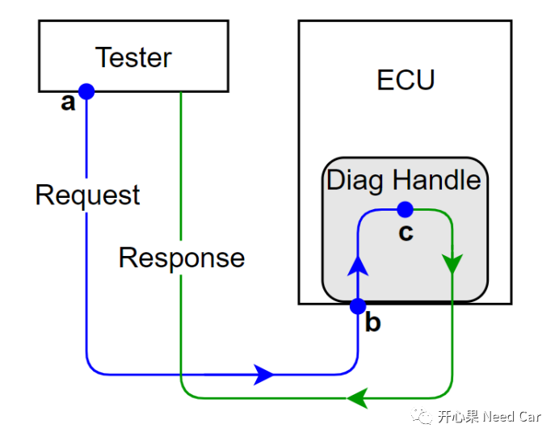
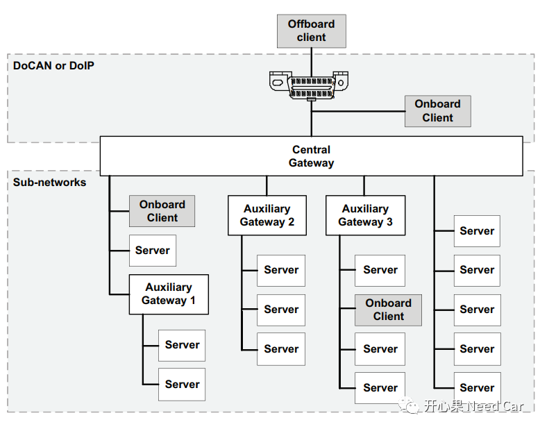
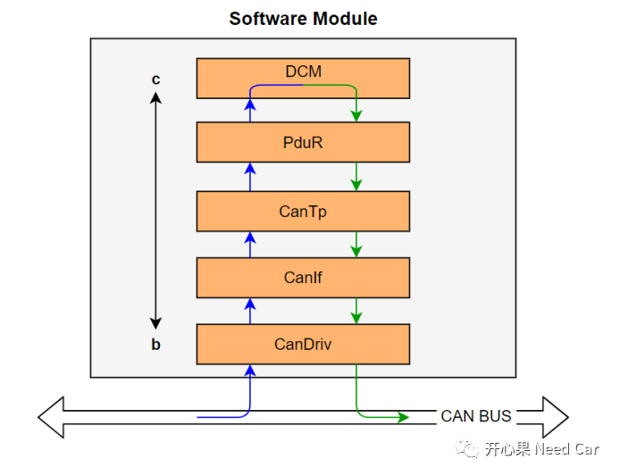
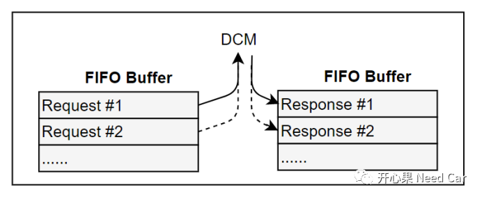
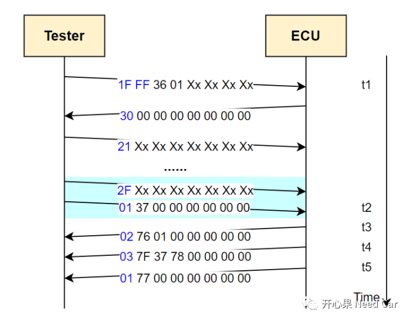

开心果 Need Car · 2022-09-21T11:52:00+08:00 · 微信原文
本文讨论焦点：
什么是队列刷写？
为什么需要队列刷写？
队列刷写（Queued Flash）是指刷写过程中，刷写上位机（Tester）可以同时发送多帧诊断请求的刷写方式。
传统的刷写流程中，刷写过程是一个“乒乓”交互过程，即：一问一答式交互，只有当前的诊断请求（Request）给出肯定或者否定响应（Response）以后，Tester才能发送下一帧诊断请求（不考虑并行发送的$3E 80服务）。而队列刷写过程中，Tester可以连续发送多帧诊断请求，也就是说：被刷写的目标ECU具备缓存多帧诊断请求的能力。
传统刷写和队列刷写对比如下所示：

OEM为了给顾客更好的驾/乘体验，不断地升级和优化车辆功能，而这些功能的升级和优化也是代码累加的产物。这意味着：相比以往，单个ECU的App（Application）软件代码量更多了，那么使用传统的App刷写方式，刷写时间也就更长了。刷写App程序时间过长会带来哪些问题呢？
第一、在工厂车辆下线时（EOL，End of Line），生产的每辆车都需要刷写App程序，而过长的刷写时长，无疑会成为制约产能的一大因素；
第二、某些高端车具备远程刷写能力(OTA，Over The Air)，如果用户想升级最新的App程序，升级用时10分钟和用时3分钟，这将是完全不同的用户体验，不同的用户体验，影响着车辆口碑和品牌价值。
在讨论队列刷写原理之前，先认识一下诊断命令处理的主角：诊断通信管理模块(DCM：Diagnostic Communication Manager)。DCM作用主要有两点：检测车辆故障、更新程序。DCM属于Autosar的重要组成模块，在Autosar软件架构中的位置如下所示：


从a点到c点花费的时间（Time_ac）可以分为两部分：
物理线路耗时（a->b）：Tester通过车辆外接的OBD（On-Board Diagnostics，车载自动诊断系统）端口连接待刷写的ECU，所以，诊断命令的传输会有部分时间耗费在物理线束的传输上。
为了便于理解，上图简化了车辆的网络拓扑，如下，示意一个贴近整车的网络拓扑结构，如下所示：

模块接收耗时（b->c）：当诊断指令到达ECU的驱动层，也就是数据链路层，到数据传递给诊断处理模块DCM也需要耗费一定的时间。
如何理解b->c的时间消耗呢？嵌入式开发中，软件会划分不同的模块，不同模块之间的交互就形成了软件层级，也可以理解为数据流的传递路线，以Autosar的诊断处理层级为例，诊断指令从CanDriv接收到DCM处理需要经过的模块如下所示：

所以，ECU的DCM在响应完一帧诊断请求后，就有一段时间(Time_ac)处于空闲状态，如果可以让DCM在Time_ac内处理诊断命令（即：DCM全负荷运行），那就需要DCM无间隙地接收到下一个诊断指令。
DCM怎样才能无间隙地接收到下一个诊断指令呢？让DCM缓存至少另一帧诊断请求。这样也就意味着节省了诊断命令由a点到c点的时间。
既然Tester可以发送多个诊断指令，就涉及到诊断指令的顺序问题。诊断刷写流程需要严格按照诊断指令的先后顺序处理，不能错序发送，也不能错序响应，否则会导致刷写失败。既然刷写序列不能错乱，那最好的处理方式就是使用FIFO，如下所示：

如上图，DCM处于近乎100%的工作状态，提高了App程序的刷写速度。
这里截取一个队列刷写流程的示例，如下所示：

提示：
诊断请求的正响应（Positive response）格式：SID(Service Identifier )+0x40，比如：0x10(DiagnosticSessionControl)服务的正响应，0x50 Xx Xx(Xx时间参数);
诊断请求的否定响应（Negative response）格式：0x7F + SID + NRC(Negative Response Code)，比如：0x10(DiagnosticSessionControl)服务的否定响应，0x7F 10 12（0x12表示Sub-Function Not Supported）。
参考资料
ISO 14229-1.pdf
往期精彩回顾